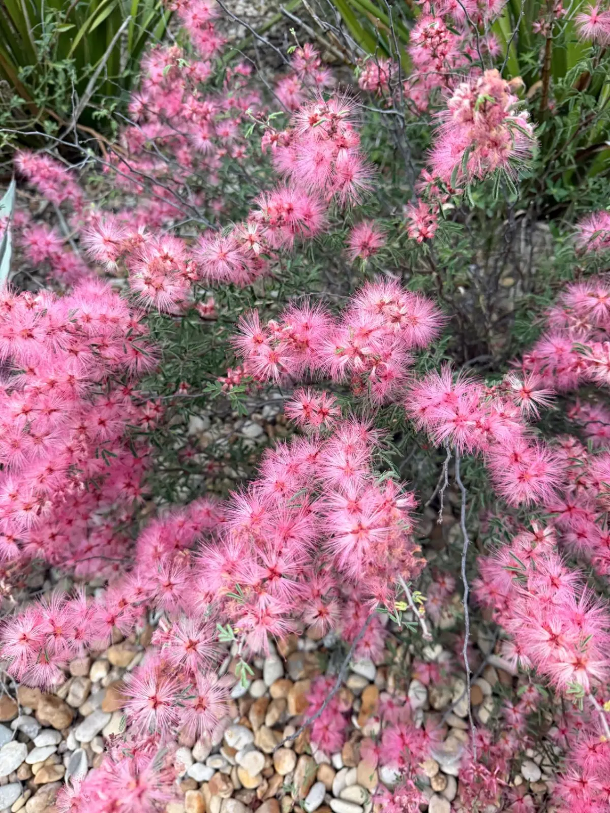
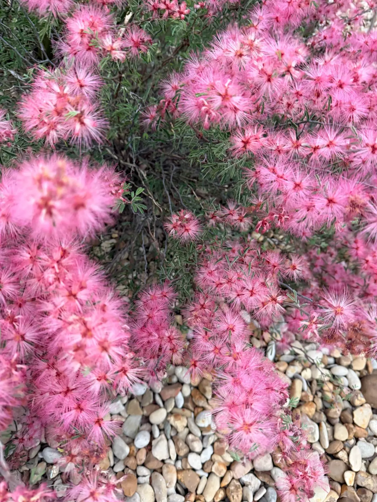
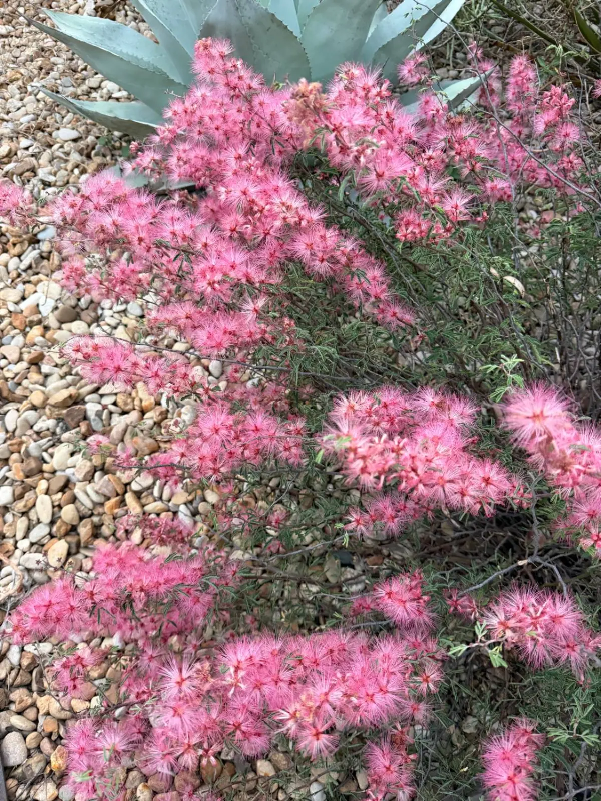

Pink fairy duster (Calliandra eriophylla) is a low, drought-tolerant shrub that typically grows about 3 feet tall and wide. It produces pink, powder-puff blooms in spring, needs full sun and fast-draining, gravelly soil, and draws bees, butterflies, and hummingbirds. Keep it out of reach of pets that chew plants.
Plant Study · Austin, TX
Pink Fairy Duster in Austin, TX
The Short Answer
What It Looks Like
A Shrub Built Around Its Flowers
Pink fairy duster is a spreading, mostly open shrub with fine, feathery green leaves. The flowers are the reason to plant it. Each one is a cluster of pink, threadlike stamens that look like a powder puff, so the shrub appears covered in pink fuzz when it blooms.
It is native to desert regions of the Southwest and northern Mexico, including West Texas. Nurseries often sell it as a low shrub for dry, sunny beds.

Bloom Time in Austin
Spring Is the Main Show
The main bloom runs from late winter through spring and into early summer. Fall rains trigger a second, lighter bloom. Rainfall sets the timing, so a dry spring shortens the display.

Where It Works in an Austin Landscape
Gravel Gardens, Slopes, and Caliche
Pink fairy duster fits the same places as agaves and native grasses: gravel gardens, slopes, and beds on caliche or rocky soil where turf struggles. Plant it in full sun, and keep it away from low spots that stay wet after rain.
A group of three or more in one bed reads as a deliberate planting. A single shrub can look lost. Pair it with agaves for contrast in height and texture. Our guides on soil preparation for caliche, decomposed granite landscaping, and cold-hardy agaves cover the rest of the bed.

Care Basics
What the Plant Needs
- Sun: Full, bright sun gives the best flowering.
- Soil: Gravelly, well-drained soil. Heavy clay holds water around the roots, which this plant does not tolerate well.
- Water: Water regularly during the first season while roots establish. After that, rainfall is usually enough, with occasional deep watering during long dry spells in summer.
- Overwatering: Too much water can cause root rot. When in doubt, let the soil dry out between waterings.
- Pruning: Shape lightly after the main bloom if needed. Pruning is not required for plant health.
Before You Plant
Things to Know
- Pets: If a dog or cat chews the plant, call the ASPCA Animal Poison Control Center or your vet. Plant it where chewing pets cannot reach it.
- Deer and rabbits: Deer browse the leaves, and rabbits nibble young shoots. Plan on some browsing in deer country.
- Winter: In Central Texas, fairy duster is deciduous and drops its leaves in winter. Protect young plants during hard freezes.
Pink vs. Red Fairy Duster
Which One to Choose
Red fairy duster (Calliandra californica) looks similar but has deep red flowers. It grows about a foot taller and is less cold hardy, according to USDA plant guidance. For most Austin gardens, the pink species is the more practical choice.
Common Questions
Pink Fairy Duster FAQ
How big does pink fairy duster get?
Pink fairy duster typically grows about 3 feet tall and wide. Wild plants can reach 5 feet tall.
When does pink fairy duster bloom in Austin?
The main bloom runs from late winter through spring and into early summer. Fall rains trigger a second, lighter bloom.
How much water does pink fairy duster need?
Water regularly while the plant establishes. Once established, rainfall is usually enough, with occasional deep watering during long dry spells. Too much water can cause root rot.
What should I do if a pet chews pink fairy duster?
Keep pets from chewing the plant. If a dog or cat chews it, call the ASPCA Animal Poison Control Center or your vet.
Is pink fairy duster deer resistant?
Deer browse the leaves, especially new growth, so plan on some browsing in deer country.
What pollinators does pink fairy duster attract?
Its flowers draw bees, butterflies, and hummingbirds.
Plan Your Gravel Garden
Xeriscape · Native Plants · Free Consultation
Get a Free Quote →